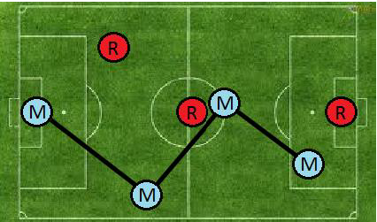

Futebol de Botão(){
Maratona
Por: Caroline Barcelos Gonçalves
Futebol de Botão
Roberto ao fazer uma limpeza em sua casa, acabou achando o velho campo de futebol de botão em que ele costuma passar o dia inteiro jogando quando era criança. Porém agora Roberto já é um adulto, e quer ensinar o seu filho Maiquel a brincar de futebol de botão.
Para deixar o jogo mais interessante, Roberto criou uma regra que valoriza a habilidade no jogo. O time só pode chutar para o gol, após tocar a bola entre todos os seus jogadores. Sua tarefa é criar um programa, para dado a posição dos jogadores de Maiquel, calcular qual é a distância mínima que a bola deve percorrer para que todos os jogadores toquem na bola, possibilitando o chute ao gol, e consequentemente a vitória.
Os passes são sempre feitos em linha reta em direção ao jogador do mesmo time. O desenho abaixo ilustra um exemplo.

Figura 1 – Menor distância percorrida pela bola até alcançar todos os jogadores.
A posição de cada jogador é dada por uma coordenada (X,Y). Assuma que o canto inferior esquerdo do campo é o ponto (0,0).
Entrada
A primeira linha contém um inteiro N>1, sendo respectivamente o numero de jogadores no campo. A seguir vem N linhas. Cada linha contém um caracter R ou M, dizendo se o jogador é do time de Roberto ou Maiquel, e dois inteiros X >= 0 e Y >= 0, dizendo a posição em que o jogador está localizado.
Assuma que não tem como a bola ser interceptada pelo time adversário durante os passes.
Saída
Para cada caso, gere uma linha contendo a menor distância com 4 casas decimais, que a bola deve percorrer para que todos os jogadores de Maiquel toquem na bola.
Exemplos
------------------------------------------------------------------------------
ENTRADA:
6
M 1 1
R 0 2
M 3 5
M 10 1
M 12 1
R 5 5
SAIDA:
14.5344
------------------------------------------------------------------------------
ENTRADA:
4
M 0 0
M 0 1
R 2 2
M 0 2
SAIDA:
2.0000
------------------------------------------------------------------------------
Referências:
Matheus Gaya Scandiffio
}